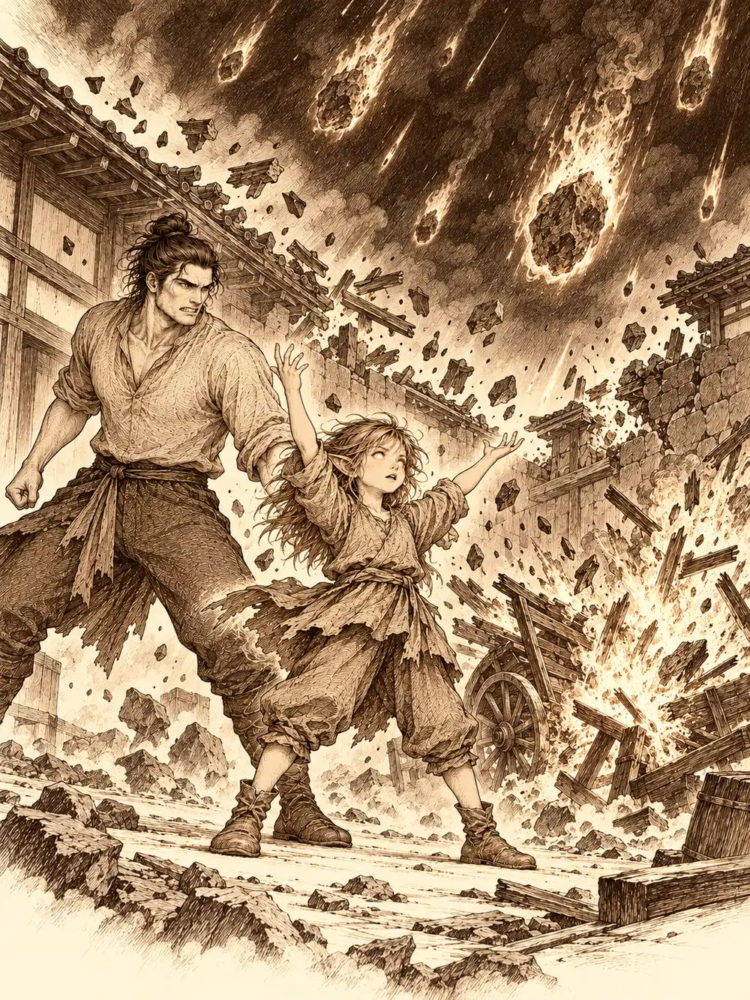

Capítulo 136
Las votaciones
Libro VIII · El hilo maldito
Banzo llegó a la base con los mofletes hundidos y la piel tirante sobre los pómulos, como una fruta puesta a secar. Tsugami le había cosido un traje de gala para la cena de las votaciones y, al ver que no le entraba, había encontrado una solución a su manera: un día entero en ayunas y unas horas sudando dentro de una sauna. El goliat había conseguido cerrar los botones. Lo que no había conseguido era seguir pareciendo vivo.
"Por el amor del océano", dijo Calista, "que alguien le dé agua".
Ella misma le tendió la cantimplora, y Banzo fue recuperando la cara a cada trago.
Había sido una semana larga. Maroxi la había pasado entre los libros de la biblioteca del shogunato y alguna noche en los barrios bajos, preguntando qué podía hacerse con la sangre del vial que Archi le había dado; todavía no tenía respuesta, y uno de sus experimentos le había estallado entre las manos. Calista había hecho campaña con visitas, promesas y sonrisas medidas. Jin había bajado al sur a entrenar reclutas. Y luego estaba el asunto del impostor: alguien había entrado en la base con la cara de Gelbreak y había hablado con Banzo, y el goliat ni sabía quién había sido ni recordaba bien qué le había contado. Habían ido a interrogar a Kazuki, el noble cambiante recién llegado a los cazadores, a su hacienda. Para Banzo, aquello lo descartaba; para Calista, la conversación no había sido concluyente. En cualquier caso, le habían encargado al propio Kazuki descubrir al culpable. Gelbreak seguía rabioso, y aquella tarde miraba con muy poca simpatía a los dos cambiantes de la casa.
Jin le dijo a Calista que Yasuoka le ocultaba cosas: en el frente, las tropas de primera línea no tenían sus mejores armas. Kazuki opinó que, ganaran o no, necesitarían al militar de su lado. Jin estaba de acuerdo en algo más: lo que de verdad faltaba en el sur eran buenos estrategas, gente capaz de hacer que cazadores y soldados atacaran juntos. Kazuki ofreció su experiencia, y Banzo lo frenó con suavidad.
"Lo principal, Kazuki, es averiguar quién intentó sacarme información".
"Lo tengo en mente desde que nos reunimos en mi hacienda".
Mientras tanto, Shizuka había ido a buscar a Maroxi con una sonrisa que le cruzaba la cara de oreja a oreja.
"¿Quieres ver lo que sé hacer? Pero fuera, que hace pum".
En el patio, Maroxi le señaló un carro viejo un poco apartado. "Apunta al carro. Si se rompe, ya lo arreglo yo".
La niña se colocó bien los pantalones, se frotó las manos, dio unas palmaditas y levantó los brazos. Se le encendieron los ojos como dos brasas. El cielo se oscureció de golpe, como si alguien hubiera corrido una cortina negra sobre la capital, y del negro empezaron a caer piedras ardiendo. El carro desapareció en un estallido de astillas y fuego, y la tormenta alcanzó también la base. Dentro, los demás vieron cómo una pared entera dejaba de estar y cómo se desplomaba un trozo de techo entre una lluvia de cascotes. Cuando se asomaron al hueco, tosiendo, encontraron a Maroxi apretando los dientes y a la niña muy satisfecha.
"Ha sido Maroxi".
"Shizuka, no mientas".
"Vale, he sido yo. Pero él me dijo que apuntara al carro".
Alguien sugirió que habría sido más sensato practicar con algo menos importante, y Shizuka respondió que normalmente practicaba con Gluglu. Antes de que nadie pudiera detenerla, señaló al hombre pez globo, aquel guardián muerto que el nekomata se empeñaba en mantener en pie, y pronunció una sola palabra.
"¡Muérete!".
Gluglu se murió otra vez. Lor Miau, el gato de dos colas, se acercó al cuerpo con mucha calma y empezó a comérselo. Calista se agachó a su altura.
"¿Cuántos pescados quieres para no volver a levantar a ese bicho?".
El gato pidió uno cada día, para toda la vida, y Calista aceptó sin pestañear. Después le dejó claro a Maroxi que esta vez no pensaba mediar: el destrozo era cosa suya. Él se defendió diciendo que esperaba una bola de fuego, nada parecido a aquello, aunque admitió que había sido una magia formidable; mencionó a Guxi, que sabía arreglar estas cosas, y a los aldeanos, que quizá ayudarían por comida, y acabó diciendo que ya se ocupaba él. Era un hombre resolutivo.
Al volver dentro encontró a la niña con su tratado de alquimia entre las manos.
"Ahora es mío".
Maroxi murmuró algo en voz baja y Shizuka se quedó mirando a un Maroxi sentado en una silla, muy tranquilo, mientras el verdadero aparecía a su lado y le quitaba el libro.
"No me la juegues a mí. Empecemos por algo más básico". Le dijo que fuera a su habitación y cogiera lo que quisiera de alquimia sencilla, y la niña salió disparada escaleras abajo.
Por el camino, Calista se apiadó de Banzo, que había seguido bebiendo agua hasta abrirse el kimono desde el ombligo. Le pasó la mano por delante del pecho y el traje creció lo justo para dejarle respirar. Gelbreak se dio cuenta del hechizo y le hizo cosquillas en la cintura; ella aguantó la risa, se retorció y al final perdió la concentración. El traje volvió de golpe a su tamaño, le apretó el estómago como un puño y el goliat soltó un eructo que duró lo que dura una oración. El drow se partió de risa.
"Mejor ahora que en las votaciones", concluyó alguien.
La cena se celebraba en el mismo anexo de palacio donde había tenido lugar el baile. Los guardias los reconocieron y les pidieron los nombres. Banzo se detuvo junto a uno de ellos y empezó a descargar sobre él sus armas, el enorme mandoble de Gur y dos arpones, hasta que el hombre se dobló bajo el peso.
"¿Y por qué no lo has dejado en la base, Banzo?".
"¿Cómo voy a dejar todo esto en la base? Soy un guerrero".
El guardia lo amontonó en una mesa de la entrada y le confesó que la guardia andaba de capa caída desde que él ya no estaba. "Ya no pasas a hacernos reír".
Dentro sonaba música suave y los nobles conversaban por grupos. Al ver entrar a los cazadores les dedicaron una reverencia dirigida sobre todo a Calista. Jin, que nunca había estado en una de aquellas reuniones, preguntó con quién convenía hablar.
"Todo esto es un campo de batalla", le dijo Kazuki. "Aquí se lucha con palabras".
Maroxi fue derecho hacia Nori y Asahi. Elogió el traje del joven y dejó caer que aún estaba pensando dónde invertir su dinero. Nori se tensó al oír aquella palabra, se recompuso y volvió a tensarse. Maroxi pidió permiso para hacer un pequeño regalo a la dama y, delante de todos, hizo brotar en el aire unas hojas que florecían y acababan estallando en chispas de colores. Los guardias se llevaron la mano a las armas; Asahi levantó la suya para tranquilizarlos.
"Muy bonito".
Lo tomó del brazo, y Nori se despidió con prisa, mirando a los lados. Cuando Maroxi preguntó si había sido demasiado impulsivo, Asahi le explicó que el joven estaba contando algo de unos dineros invertidos, pero que ella no lo escuchaba porque miraba a la puerta.
Calista, entretanto, saludaba a Anri con el oído puesto en la mesa principal, donde Yuichi hablaba de barcos y Yasuoka de abrir los puertos cuando acabara la guerra para mejorar el armamento. Anri le contó, con una sonrisa, que habían visto a Maroxi y a Asahi bajo el cerezo. En algún momento Calista cruzó la mirada con Hanae, que la fulminó, miró al drow y volvió a fulminarla; Calista le devolvió una sonrisa deslumbrante. Anri seguía preocupada por los refugiados. Algunos se habían ido ya a Ukio, a la base de los cazadores, y otros habían encontrado cobijo en un templo de las montañas, donde los acogía un medio orco.
"He oído hablar mucho de ese Gur, el campeón. Me gustaría conocerlo".
"Te lo podría presentar", dijo Calista. "Es un poco torpe en el trato. Lo compensa con un buen corazón".
Jin, por su parte, se acercó a Nomi, que bebía solo y apretó la botella contra sí al verlo. Cuando el noble le dijo que se fuera al barro si quería pelear, Jin le respondió que llevaba mucho tiempo luchando por un país que ni siquiera era el suyo, y que el noble seguramente solo luchaba contra la cirrosis. Se bebió la copa de un trago y se marchó. Fukami, en otra esquina, se había apoderado de Kazuki y lo tenía sentado en el regazo como un muñeco; él le recordó al oído el trato que habían hecho. Banzo rehusó sentarse con ellos, le puso la mano en el hombro a su compañero como diciendo que la misión era la misión, y al pasar junto a Nori, que seguía inquieto, le devolvió la reverencia con una sonrisa tranquila.
Sonó una campanilla y los nobles se sentaron a cenar. Calista ocupó la silla contigua a la de Yasuoka; Hanae le dio un golpecito con el pie, se disculpó por el vestido y fue a colocarse junto a Banzo, desde donde tenía a Gelbreak a la vista. Entre las sirvientas apareció Mei, la muchacha que había ayudado a Banzo en su día y que ahora ayudaba a Calista. Sirvió a todos una sopa y, al pasar junto a la candidata, deslizó algo bajo su servilleta.
Calista abrió el abanico. El brillo de la seda desvió las miradas un instante y su mano sacó el papel doblado con una calma de tahúr. Lo leyó a la altura de la mesa sin que nadie lo advirtiera.
Veneno.
Le rozó el muslo a Gelbreak y, por debajo del mantel, se lo dijo en la lengua de signos de los drow, que nadie podía descifrar si no se la enseñaban. Él dejó la cuchara despacio y paseó la vista por los comensales. Dio un golpecito en la mesa, pero ni Jin ni Banzo se dieron cuenta. Yasuoka comía su sopa. También Ayuko, y Yuichi, e Isoko, y Hanae. Y Banzo y Jin, sin sospechar nada.
Jin intentó hablar de soldado a soldado con Ayuko, que tenía al lado.
"Me gusta pensar que los cazadores somos el escudo de Kuroto, y los militares la espada".
"Creo que ha estado en pocas batallas", dijo la estratega. "Los que van en primera fila son tropa de choque. Los mandamos delante para que los más capacitados den el golpe fuerte sin perder piezas valiosas".
"Si seguimos pensando que todos somos prescindibles, al final la gente prescindible se acabará".
"Se reproducen rápido".
Jin le propuso hablar de estrategia. Ella le contestó que aquel no era el lugar, que en el campo de batalla tendrían que seguir sus indicaciones y que no le gustaría tener que echarlo de la cena. Luego se giró a susurrarle algo a Yasuoka. Banzo, que llevaba escritas en el pliegue de la barriga, entre los tatuajes, las preguntas que no quería olvidar, le preguntó a Yuichi qué le parecía comerciar con otras tierras de Arghast. El comerciante respondió que el antiguo shogun había mantenido las fronteras cerradas; si se abrían y salía algo provechoso, le parecía buena idea.

En la otra mesa, Maroxi había decidido que esa noche quería razones. A Nori se le fueron los ojos hacia Gelbreak al hablar de Calista. A Kazuki, que se enredaba en frases de cortesía, Maroxi le pidió que hablara como él mismo.
"Calista ha estado a pie de campo", dijo Kazuki al fin. "Ha visto lo que le falta a esta sociedad. Y la he visto ayudar al prójimo".
Montaro, que bebía sake en silencio con la sonrisa de quien sabe lo que se juega, preguntó a Maroxi qué pensaba él. El cambiante reconoció que se había abstenido cuando los cazadores propusieron a Calista, aunque aceptaba la decisión de sus compañeros.
"No me importa decirle mi voto", dijo Montaro. "Votaré a la señorita Calista. Es audaz en sus palabras, cosa rara donde todo el mundo se anda con rodeos. El shogun no tiene que ser el jefe militar ni el económico. Tiene que ser perspicaz y tener mano resolutiva".
Le contó que su familia había comerciado por muchos lugares de Arghast hasta que el antiguo shogun cerró las fronteras. Llevaba prendidos adornos que Maroxi no había visto nunca: un escarabajo dorado con alas, piezas de otras culturas. Montaro las llamó baratijas, traídas por sus contactos desde una ciudad lejana que pronunció como Amnem. Maroxi sugirió que esos mismos contactos quizá pudieran conseguirle objetos de más valor, y el noble prometió hablarlo.
Poco después, Nori se levantó para ir al baño y se le cayó un trozo de papel. Maroxi dejó caer un cuchillo, se agachó con un "qué torpe soy" y lo recogió. Era la esquina rota de un talón. Solo se leía de inversiones. Ni cifra, ni nombre, ni destinatario. Se lo guardó.
Cuando las sirvientas volvieron a recoger, Mei se llevó los cuencos intactos de Calista y de Gelbreak. Banzo, que había ayunado un día entero, levantó la mano.
"No vas a tirar eso. Dámelo, que la gente está pasando hambre, Mei, por favor".
La sirvienta negó una y otra vez y salió casi corriendo hacia la cocina, tan nerviosa que la sopa le iba goteando por el suelo. Banzo buscó una explicación en el drow, que le hizo un gesto que el goliat no supo leer. Nadie sabía qué llevaban aquellos cuencos, ni quién lo había puesto, si es que alguien había puesto algo.
Calista decidió que lo mejor para no seguir comiendo era hablar sin parar. Le preguntó a Yasuoka cómo pensaba sostener el ejército a largo plazo, y él le cedió la palabra primero. Ella habló de reforzar el comercio, de abrir las fronteras y de la flota de Yuichi, y de cuidar a los de abajo, porque de allí salían las tropas.
"¿Duda de que yo dejaría comer a mi gente?", replicó él. "Que me dedique a lo militar no significa que deje morir a nadie".
"Me preocupa que todo lo demás quede por debajo. Un reino es como una pirámide. Si se carga todo el peso en un lado, se derrumba por ese lado".
La conversación derivó hacia el sur. Ayuko defendió que habían detenido la primera ola y que las defensas se estaban construyendo como ella había ordenado; admitió que los cazadores habían colaborado, aunque se perdieron hombres en aquel ataque de elefantes.
"Las leyes del antiguo shogun dicen que no podemos ordenar a los cazadores. Tengo las manos atadas".
"Entonces infórmelos de los movimientos militares", insistió Calista. "Eso sí puede".
Banzo pidió la palabra. Lo que ocurría en el campo de batalla, dijo, era lo mismo que ocurría en aquella mesa: disputas, desacuerdos y ninguna colaboración. El general Hati era de los más válidos que tenían, pero el primer paso para ganar era que los dos candidatos se pusieran de acuerdo. Ayuko le preguntó cómo iban a dejarles el mando si no sabían ni cuántos eran.
"Trece que valen por mil", dijo Banzo. "Si uno de los dos sube al trono y el otro no colabora, Kuroto estará perdido".
"¿Creen que si la señorita Calista gana haré algo en contra de ella?", dijo Yasuoka. "Colaboraré para ayudar a Kuroto. Pero si los cazadores vuelven a ser una fuerza que va por libre, y no muy organizada, por el bien de nuestros soldados tendremos que disolverlos. Nunca dije que fuera a hacerlo sin más. Lo haría si siguen así. Busquen un líder y hablen con los comandantes".
"Está usted hablando con el líder".
"Entonces encárguese de hablar con la estratega. Pero este no es el momento".
Calista zanjó el asunto: saliera quien saliera, ella o Yasuoka trabajarían por Kuroto y ninguno estorbaría al otro. Mientras hablaba, iba guardando en la memoria cada problema que había salido a la luz. No había acuerdo, pero tenía un mapa. Y en su lista de sospechosos por la sopa estaban, de momento, su rival y su estratega, como podía estarlo cualquiera con algo que ganar. Sospechar todavía no era saber.
El postre fue un helado de limón rodeado de pétalos de cerezo. El cónsul bajó la escalera y anunció que quien quisiera votar en privado podía acompañarlo a la sala contigua, y quien no, debía decir su voto en voz alta.
Kazuki se levantó a la vez que Fukami y no tuvo miedo de decirlo: "Mi voto es para Calista". La candidata votó en privado. Banzo entregó al cónsul una lista con las decisiones de los cazadores ausentes y luego se volvió hacia la sala.
"Espero no arrepentirme de esto, pero siempre confío en los cazadores. Mi voto es para Calista".
Gelbreak dijo lo mismo. Maroxi votó en privado, como la mayoría de los nobles. Fukami gritó "¡Calista!" con un trozo de carne en la mano, y Hanae dijo "Yasuoka" sin dejar de mirar a la tritón. Los votos se contaron tras una puerta cerrada, y cuando el cónsul volvió a bajar y pidió silencio a los músicos, Hanae se quedó dormida sobre la mesa delante de todo el mundo.
"Los resultados son veinte votos contra doce", dijo el cónsul, "y el nuevo shogun, para defendernos de esta guerra, será la señorita Calista".
Hubo aplausos. Calista le dedicó a Yasuoka una reverencia de buena adversaria, y él se levantó y le devolvió la misma. No quiso dar un discurso, que guardaba para la coronación, pero no pudo marcharse sin decir algo.
"No han sido votos en un papel, sino votos de confianza. Vamos a sacar a Kuroto de esta crisis y de esta guerra. Unamos nuestras fuerzas. ¡Viva Kuroto!".
Los nobles se levantaron para inclinarse. Maroxi le preguntó a Asahi si quería ir a ver un cerezo, y ella no lo dejó ni despedirse. Banzo buscó a Yasuoka y a Ayuko.
"Si puedo ser un nexo entre sus decisiones, las del general Hati y lo que podamos aportar los cazadores, cuenten conmigo".
"Veremos cómo lo hace la señorita Calista", respondió Yasuoka, y le tendió la mano. "Es un honor hablar con alguien tan capaz en combate".
Jin le dijo a Ayuko que esperaba verla en el campo de batalla, y ella le recordó que era estratega y no pisaba el campo de batalla. Kazuki se desprendió de Fukami con la excusa de una misión del líder, a cambio de prometer que pasaría después por su alcoba. Gelbreak le susurró algo a Calista; ella aceptó con la condición de que, a la mañana siguiente, él hiciera todo el equipaje de la mudanza. Hubo un destello blanco junto a la escalera y los dos desaparecieron.
Kazuki le tiró de la manga a Banzo para que se agachara. ¿Tenía a alguien en mente?
"El otro cambiante que conozco es Maroxi, y no creo que tenga interés en sacarme nada con la cara de Gelbreak. Aunque hay magia para disfrazarse. Se me ocurre gente. Tengo que ir al sur a informar a Hati en persona. ¿Venís conmigo y lo discutimos por el camino?".
Salieron a las calles de Sho con la noche ya cerrada. Los farolillos de papel se balanceaban sobre las puertas y el aire olía a leña y a río.
"Tú y yo no estamos hechos para conversaciones de cena", le dijo Banzo a Jin, y se rio.
"Prefiero combatir contra un demonio antes que hablar con las hienas que llamamos nobles".
Kazuki preguntó quién podía tener magia para disfrazarse y querer hacer daño a los cazadores, y Jin le contestó que esa magia era común; la pregunta era quién tenía motivos. Banzo los contó con los dedos: algún noble, algún espía de Otakemaru, Danifae.
Una figura salió de la oscuridad sin hacer ruido. Banzo notó un brazo que se enredaba en el suyo y lo agarraba con fuerza, y al bajar la vista encontró una sonrisa enorme y unos ojos de color ámbar.
"¿Yo? ¿Querer joderos? Nunca haría eso", dijo Danifae. "Hacía tiempo que no nos veíamos".
Kazuki se presentó y le explicó que alguien había tomado una apariencia ajena. La drow puso una tristeza tan forzada que no intentaba engañar a nadie. Hacerse pasar por otro era difícil hasta para ella, dijo.
"Pero no para un cambiante, ¿verdad, señor Kazuki?".
Él contestó que ya había hablado del asunto con sus compañeros, que no tenía nada que esconder y que hay magia que permite parecerse a cualquiera. Quien buscaba la respuesta, añadió, era el hombre cuyo brazo ella sujetaba. Después hizo una reverencia y apretó el paso hacia su hacienda para prepararse para la coronación.
"¿Estáis muy calladitos?", dijo Danifae a los otros dos. "¿No ha ganado la democracia?".
"Yo nunca he dicho nombres", replicó Jin. "No soy tan estúpido de acusar a nadie sin pruebas. Hoy ha ganado Kuroto".
Banzo se soltó por fin de su brazo.
"Calista. Veinte a doce". La miró desde su altura. "Ya sospeché de ti cuando atacaron a Calista, y lo sigo haciendo. No te acuso. Pero ir por libre es lo que conlleva".
"¡Ha ganado la tritón! Mi hermanito debe de estar muy contento". La alegría falsa se le borró enseguida. "Lo de Calista y yo es una rencilla entre amigas. ¿Nunca te has preguntado por qué?".
"Estoy aprendiendo a no meterme en asuntos familiares".
"Si no me vais a detener, seguiré con lo mío. Intentaré pasarme a ver a mi cuñada subir al trono".
"¿Detenerte? Tú y las cadenas no sois muy amigas, ¿verdad?".
Danifae ya se alejaba y no se volvió.
"El que tiene miedo a las cadenas es mi hermanito. Lo tenían atado para que no mordiera".
Agitó la mano por encima del hombro y la oscuridad de la capital se la tragó. Jin se fue a descansar. Banzo se quedó un rato en mitad de la calle, mirando el punto exacto por donde la drow había desaparecido.